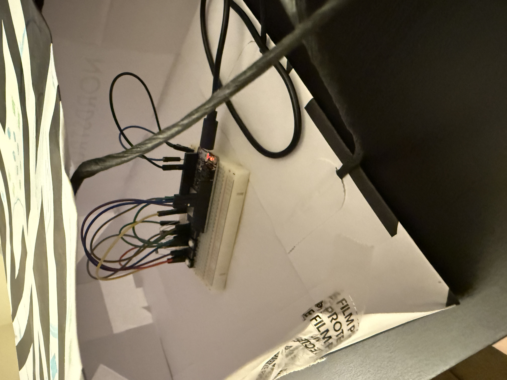
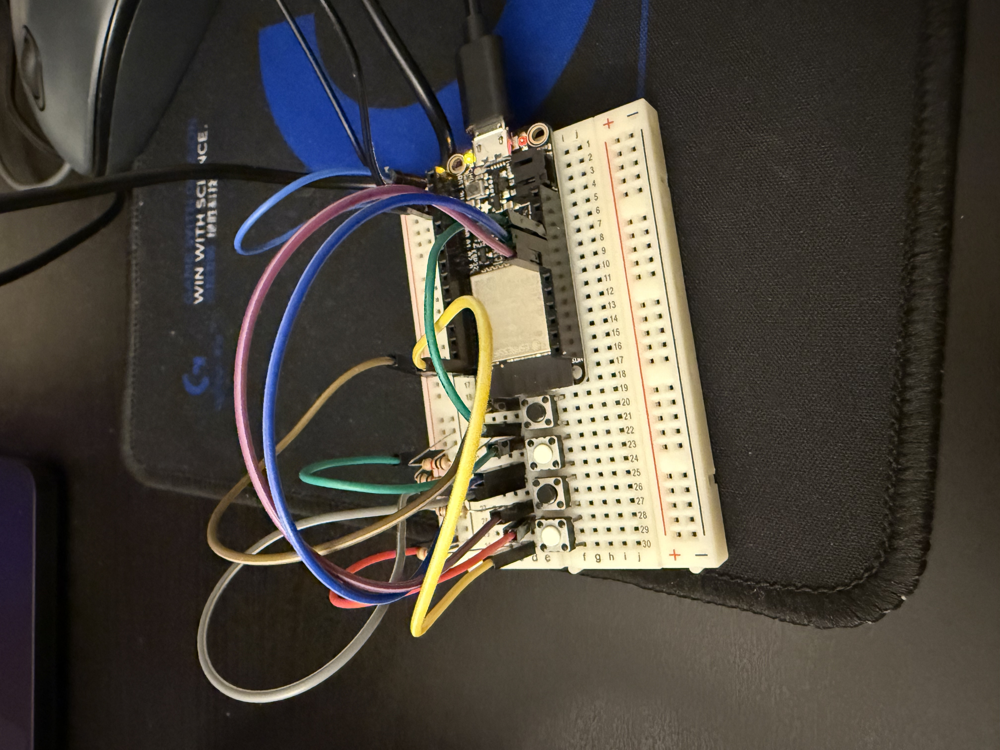
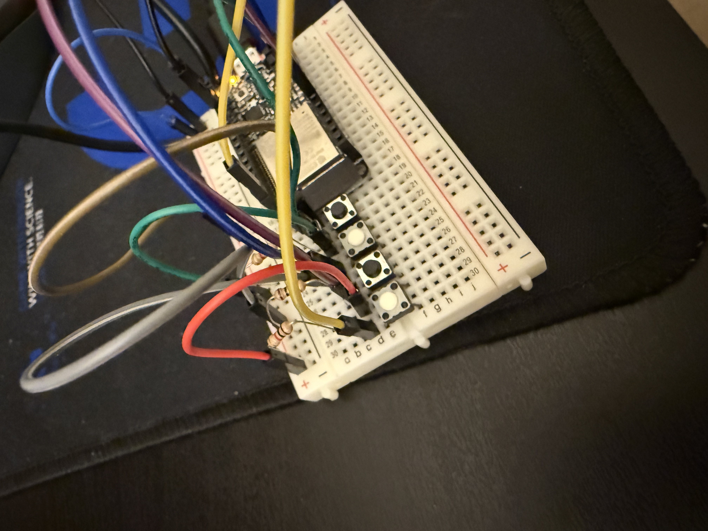
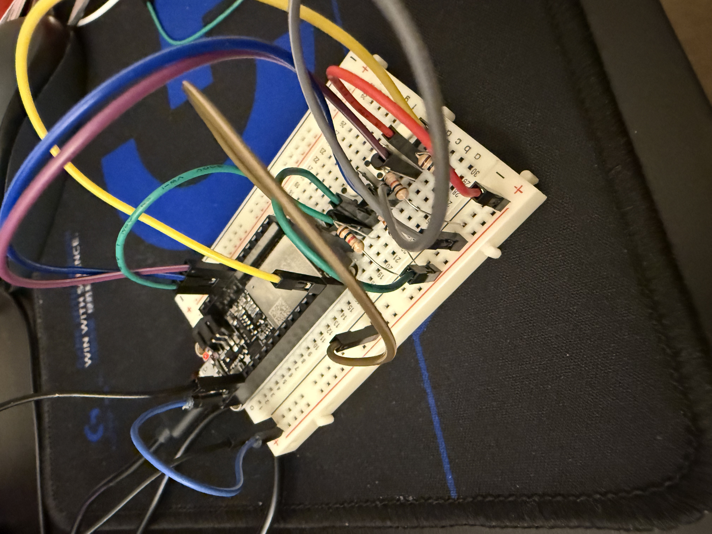
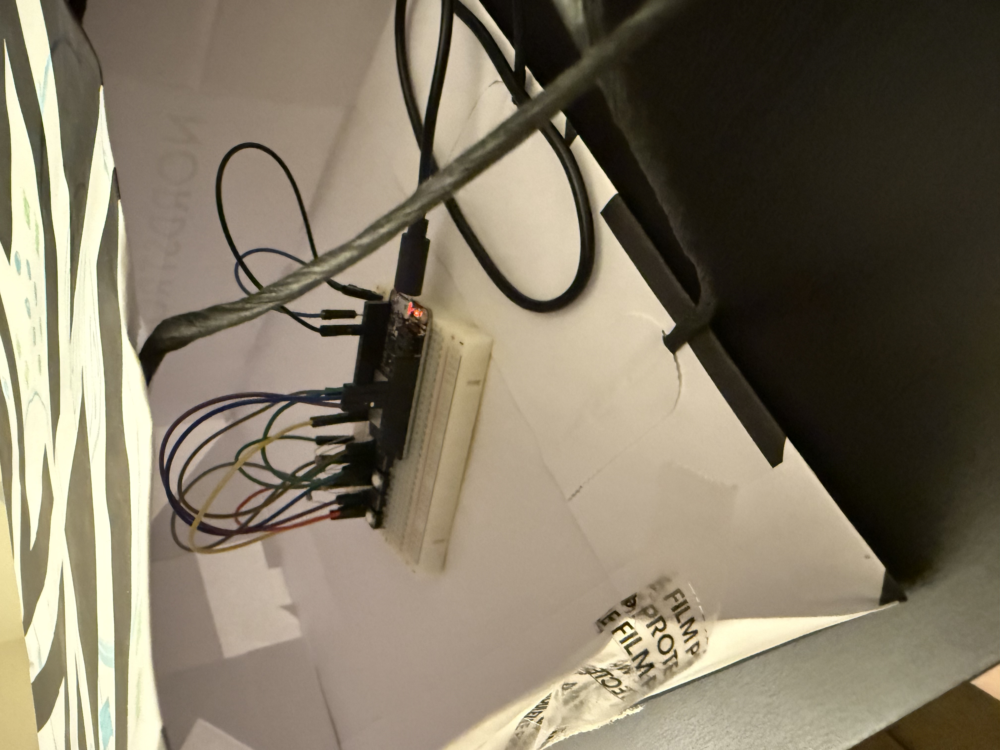
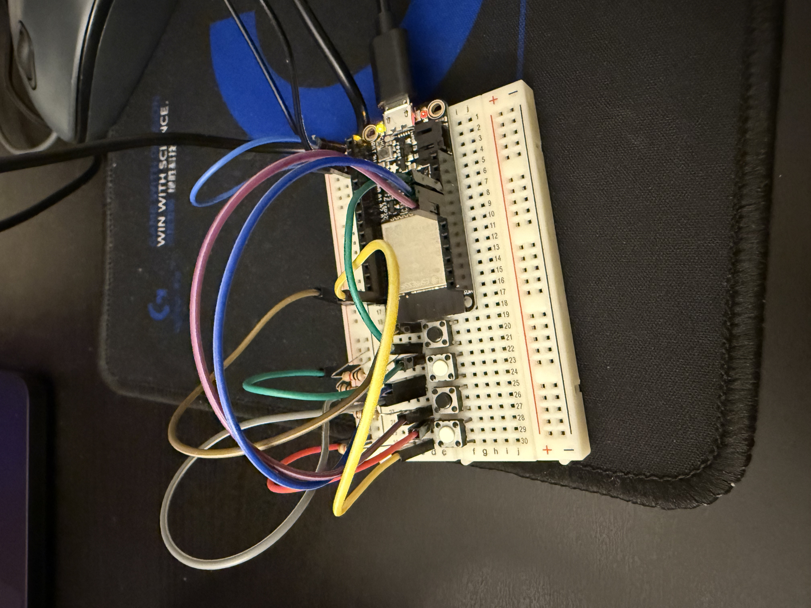
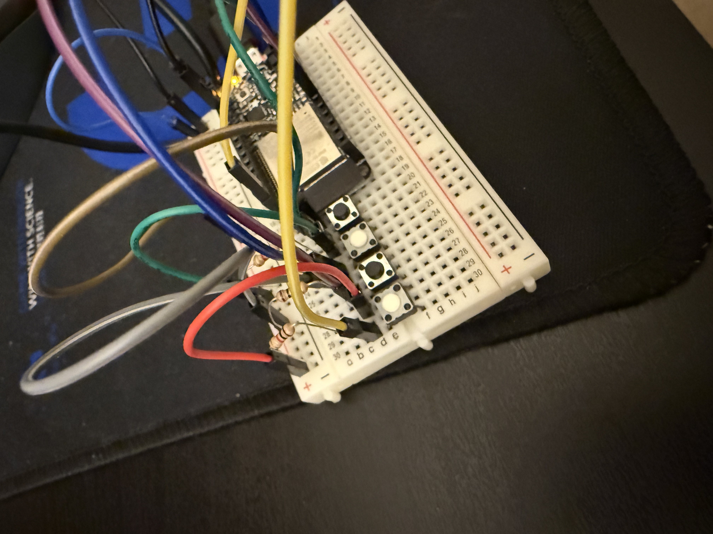
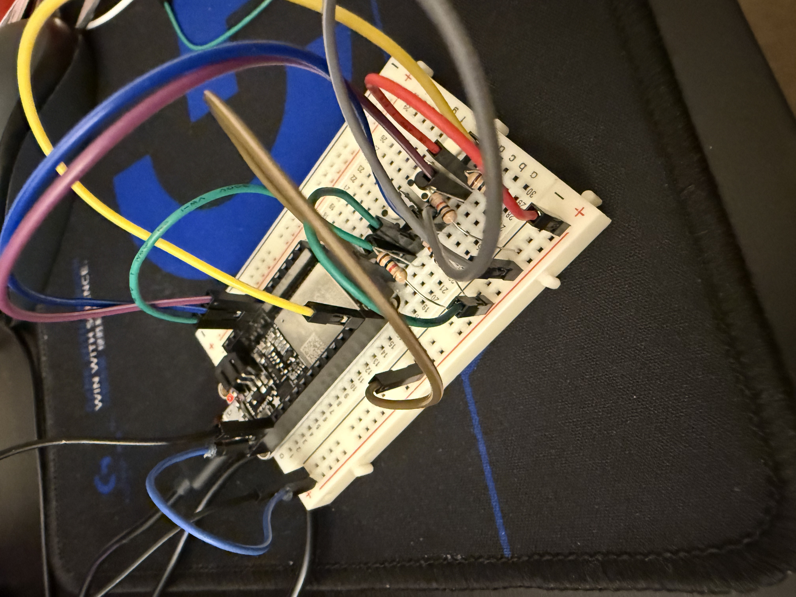

This project uses four buttons connected to an ESP32 to control four string instrument sounds in Processing. Each button triggers a different pitch, inspired by orchestral instruments such as violin, viola, cello, and bass. Visual circles on the screen represent the sound parameters. Higher pitches appear as smaller and brighter shapes, while lower pitches are larger and darker. The system is designed for solo performance and explores the relationship between physical input, sound, and visual feedback.The physical layout of the buttons follows pitch order, from higher sounds to lower sounds. This makes the instrument easier to understand and play.
Visual elements are used to represent the sound parameters on the screen. Each sound is mapped to a circle with different size, brightness, and vertical position. Higher-pitched sounds appear as smaller and brighter circles near the top of the screen. Lower-pitched sounds appear as larger and darker circles closer to the bottom. When multiple sounds are played together, multiple circles appear at the same time, creating a visual chord. A slight trail effect is added to visually represent the sustain of the sound.
VIDEO is here
 






